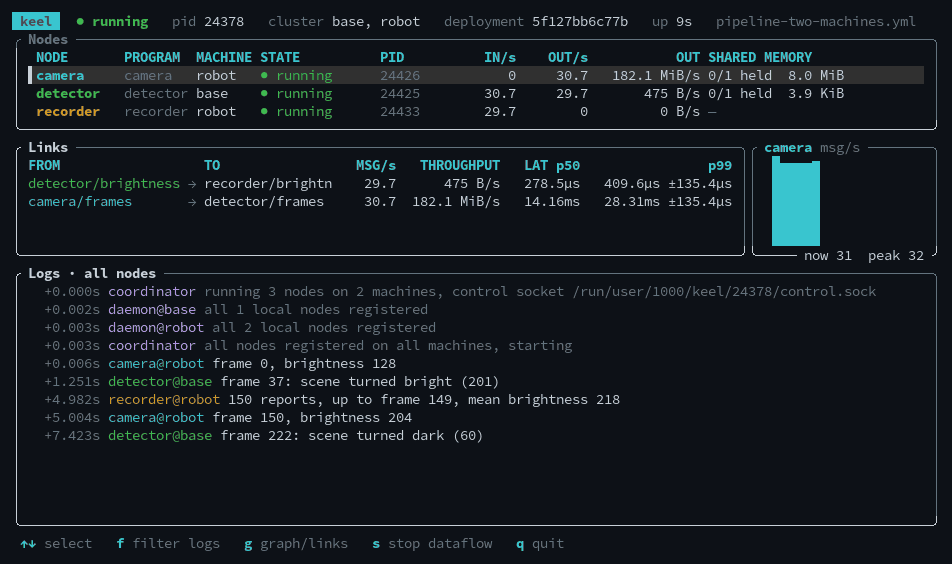

keel is robotics middleware in about 9,000 lines of Rust: fast messaging, real-time control, deployment and tracing, built on what Linux already ships.

What's inside
keel is a learning project. It asks how a whole robotics stack fits together when each layer is the smallest thing that works, and writes every decision down.
keel run · keel stop · keel updatekeel-pid · keel-sim · keel-cankeel top · keel trace · keel replaykeel deploy · keel rollback · keel fleetkeel provision · keel image · keel doctorSpeed
At first, every message was copied through the daemon. Now only a small note moves, so an 8 MiB camera frame costs the same to send as a few bytes.
Median round trip for an 8 MiB message, on a log scale, across three versions of the transport.
Measured on a desktop (Core i7-8700K, 6 cores, Fedora, stock kernel, powersave governor, no isolation) unless noted. The control-loop and Raspberry Pi figures come from earlier runs. Each is a single run.
| Size | RTT p50 | RTT p99 | Messages/s |
|---|---|---|---|
| 64 B | 5.5 µs | 18.7 µs | 5.59 M |
| 4 KiB | 5.8 µs | 19.0 µs | 5.77 M |
| 64 KiB | 5.5 µs | 7.4 µs | 4.63 M |
| 1 MiB | 5.5 µs | 7.1 µs | 1.26 M |
| 8 MiB | 5.5 µs | 8.1 µs | 259 k |
Nothing reads or writes the payload, so this measures the hand-off, not memory bandwidth. A real producer pays for writing its frame once, in place.
A message every millisecond, measured from publish to the receiver's hands. "Floor" is the same measurement with keel out of the way.
| p50 | p99 | p99.9 | max | |
|---|---|---|---|---|
| keel, sleeping | 70.8 µs | 864.5 µs | 2.15 ms | 2.89 ms |
| keel, spinning | 587 ns | 1.97 µs | 19.3 µs | 27.6 µs |
| floor, futex | 69.5 µs | 447.9 µs | 886.6 µs | 1.09 ms |
| floor, spin | 114 ns | 346 ns | 15.6 µs | 35.3 µs |
Median one-way hop with the receiver spinning, log scale. Only a descriptor moves, so the size of the message doesn't matter.
Between two hyperthreads of one core keel hops in 349 ns against 79 ns for the floor. The few hundred nanoseconds keel adds is the hop touching four cache lines in turn (bell, ring, entry, region header) where the floor touches one. On a laptop a 6.2 MB frame hopped like 64 bytes (574 ns), and reading it then took 79 µs.
Laptop. A PID holding a simulated joint at 1 kHz: time from the state being sent to the command arriving.
A 1 kHz loop, 10,000 ticks, every core busy. Stock kernel, not PREEMPT_RT.
| Wake-up late, p99 | Worst wake-up | Worst round trip | Missed | |
|---|---|---|---|---|
| Normal scheduling | 69.5 µs | 5.1 ms | 6.0 ms | 2.5% |
SCHED_FIFO and pinning | 12.2 µs | 85.8 µs | 331 µs | 0.0% |
Reproduce: cargo build --release && ./target/release/keel run examples/bench.yml. The raw runs are in the architecture doc.
Try it
cargo build
./target/debug/keel run examples/pipeline.ymlThen, in another terminal, keel top shows the graph live, keel trace shows where the time goes, and keel stop ends it.
Docs